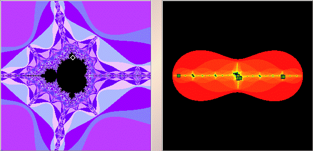

Julia Sets and the Mandelbrot Set
Sample 2

Each clump on the right consists of 3 cycle points, for a total of 9.
This is a
3-cycle
disc attached to a
3-cycle
cardioid, and we see an example of the
multiplier rule
: this is a
9-cycle
disc, 9 = 3*3.
Return to
Samples
.